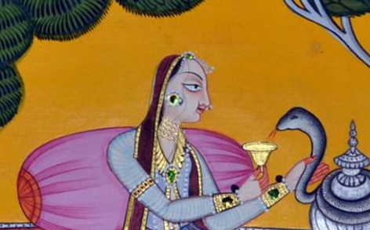

Born from a fleeting yet profound encounter with the artisans of
Basohli, The Lost Arts, now Pinnakey House is an ongoing exploration
of heritage craftsmanship—its fragility, resilience, and quiet beauty.
Hosting these artisans at home back in 2018 revealed a practice that
extended far beyond painting.
The delicate brushstrokes, vivid pigments,and ritual of creation—each
step, from sourcing colors in Jaipur to crafting brushes from squirrel
fur—was not mere artistry; it was devotion in motion.
The delicate brushstrokes, vivid pigments,and ritual of creation—each
step, from sourcing colors in Jaipur to crafting brushes from squirrel
fur—was not mere artistry; it was devotion in motion.
How does one preserve a living history?

The Lost Arts began as an attempt to answer this question—to bring
visibility to a practice slipping into obscurity. That inquiry
continues to evolve through Pinnakey House, expanding the conversation
to crafts & arts pan India, shifting perspectives yet staying rooted
in the same pursuit: reimagining the future of India’s legacy crafts.
The Lost Arts TheUnpublished